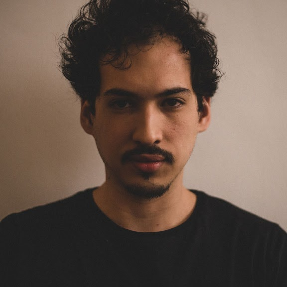
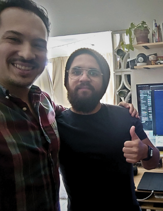

(this photo is 8 years old — I'm bald now and almost done with the braces. New one soon.)
Trained as a violinist and trumpet player, became a cinematographer by vocation, and a stage director by accident. Born in Venezuela, spent his formative years filming symphony orchestras across the world's great theatres — including La Scala — then nine years in Buenos Aires building opera productions from the inside, first as assistant stage director, then as executive producer. He arrived in the corporate world and found the sharpest contrast of his life: companies with history and real things to say, communicating them without craft or coherence — in the film, in the website, in the first reply a client receives. He built ARC to work across that whole layer. He brings the same attention you'd give an opening night: if the curtain goes up tomorrow, everything needs to be ready today. He also has a Master's in Digital Marketing, but that doesn't matter.

(This photo is also old — I already explained my situation but Robs looks better)
Robs is one of the most incredible audiovisual artists I have ever met — an outstanding photographer, a first-class video editor, Motion Graphics of an even higher tier than first class, he builds websites, records podcasts, owns a 3D printer with which he constantly invents things only he will ever need, and has 33 Philips Hue bulbs. (All of the above is true, but I need to update his bio — we have been working a lot and simply haven't had the time.)